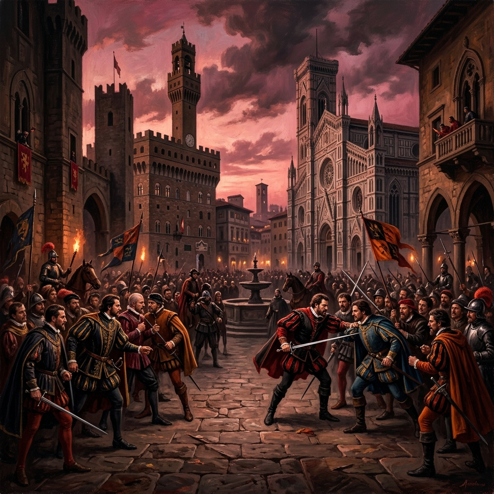
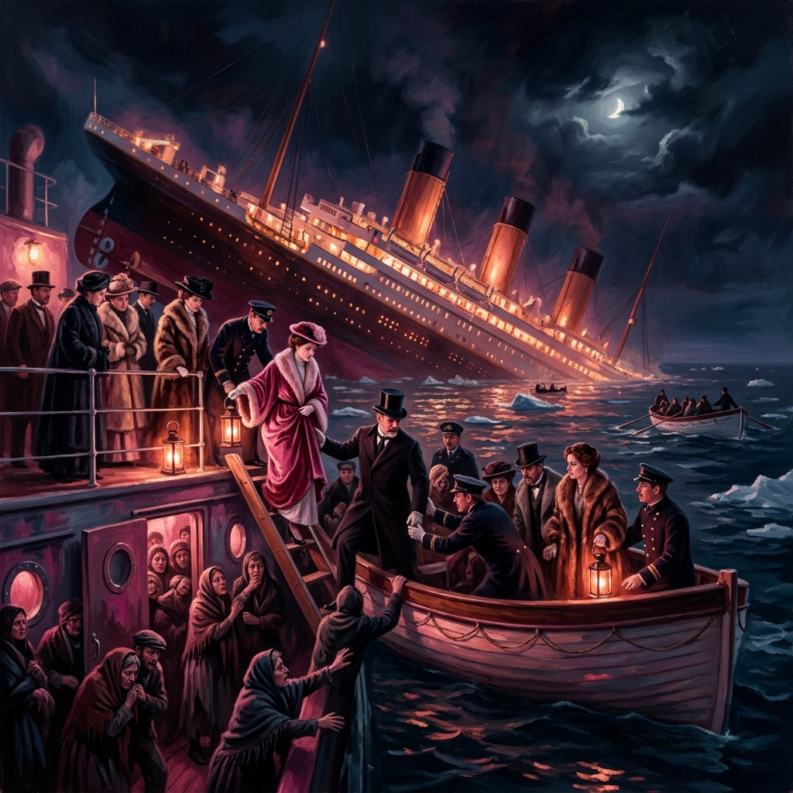

I. The Argument
Question: How do the societal values, established by the setting, determine the fate of the star-crossed lovers archetype across different texts?
Claim: Those who are marginalized by society for their identity are fated for their love to fail.

The Setting
"Two households, both alike in dignity..."
A politically fragmented 16th-century Italy defined by ideological factions.
Text I: Romeo and Juliet
The Italy in “Romeo and Juliet”, likely set in the 16th century, was drastically different from the one known today. The unification of Italy would be completed hundreds of years later in 1861, for now it was an immensely politically fragmented collection of constantly warring city states and their noble families.
Nobles would assign themselves to ideological factions such as the Guelphs and the Ghibellines who supported the Pope and the Holy Roman Empire respectively, making conflict common in daily life (Historic World Events 2017). This history is demonstrated in Romeo and Juliet with the hostile nature of their opposing families. The tragic fate that befalls the star-crossed lovers reflects the struggles for power among Italian nobles which prevented both romantic and political unification.

The Class Divide
"You're going to get out of here, you're going to go on and you're going to make lots of babies..."
Societal class divisions act as an immovable force against their survival.
Text II: Titanic
The powerful vs the powerless can be seen through in titanic which in the evacuation scene can be seen prioritizing the first class. The richer passengers are led to more safety while many of the third class passengers are locked below to die and ultimately are let out but to no advantage seeing as most of them do eventually die. There are however some exceptions to this seeing as even among some first class passengers the men were left prioritizing women and children leading most of the men to be powerless. This inequality is led to be deadly and leaves many people to die.
Social classes can be seen in Titanic as there are distinctions such as Rose and Cal that are first class, who wear expensive clothing and formal behavior as seen as they are visibly richer than the lower class. Meanwhile in the lower class Jack is visible as more free, not bound by strict formal expectations allowing him to be free and not bound by social standards as seen through his clothing and the way he obtains his ticket in the first place through poker showing him to be significantly less rich compared to Rose and the upper class. The distinctions are clear and obvious as seen through the characters behavior and social standard which varies greatly.
The failed romance between the two, while depicted as heartbreaking, is grounds for a lot more as their romance is genuine and breaking social standards. Rose is comparatively richer compared to Jack and this economic inequality leads to disaster when the ship sinks and first class passengers are prioritized over the third class passengers leading to their separation and the heartbreak in the movie. Society can be seen trying to split them up due to their economic imbalance as seen through Cal (Rose’s Fiance at the time) who is constantly trying to figure out how to separate the two and being the catalyst for Jack's death. Jack’s death is tragic and it shows how powerless he is in an unequal economic system leading to heartbreak.

The Streets
"Tonight, tonight..."
The rumble reflects the uncontrollable acceleration
of violence born from prejudice.
Text III: West Side Story
Historical: West Side Story was set in the 1950’s in New York City. Around this time many more immigrants were coming to New York, including Puerto Ricans. The rise of Puerto Rican immigrants moving into New York led to the creation of the rivalry between the Jets, a white American gang and the Sharks, which were Puerto Rican, and they both fought for territory. The history behind the two rival gangs ties back to racism, and how white people didn’t like people of any other color. The Jets didn’t like the Sharks because they were Puerto Ricans, as well as the Jets feared that they were going to take their land and jobs. But the racism didn’t apply just to the jets, the Sharks also hated the Jets as well because they were white, many of the people in the Puerto Rican gang wishing to go back to Puerto Rico once they got rich enough in New York. This racism dates back to hundreds of years ago, and it prohibited Maria and Tony being together; eventually ending the lives of Tony, Bernando and Riff. Maria and Tony were star-crossed lovers fated to never be together because of the history of racism.The deaths were tragic, but every single one all tied back to the racism in the history of white Americans and Puerto Ricans.
Cultural: West Side Story, set in New York City, portrays the feud between the immigrant groups of Irish and Puerto Rican descent, whose longstanding conflict is caused by differences in culture, race, and languages. Each side holds a deep sense of pride in their identities which further fuels resentment toward the other group. These strong cultural identities shape both of the immigrant groups’ perspectives, preventing them from seeing beyond their own prejudice. The rigid social boundaries and hostility established by the two groups put the relationship between Tony and Maria, two lovers from opposing sides, at risk. This important connection between the main characters demonstrates how these divisions are socially constructed rather than being predetermined. The tragic ending of West Side Story emphasizes how unchecked social tensions lead to destructive consequences. All the fatalities arise due to all of the missed opportunities for understanding and communication between both sides. The musical critiques ethnocentrism by illustrating how pride and bias blind opposing groups from realizing their similarities and the power of community. The purpose of this text is to show that while true love can arise from societal divisions, it cannot survive in a society dominated by prejudice and hatred.
II. Star-Crossed Lovers
III. Character Connections
Select a Character
Click on any name above to vividly map their fatal connections and loyalties.
IV. Synthesis & Conclusion
The factor that determines starcrossed lovers fate are the social conflicts of the setting, not necessarily marginalization. The clandestine romances range from rival Italian noble families, to conflicting immigrant groups, and a cross-class affair, across our selected texts. However, many modern stories use marginalization as the vehicle of fate.
While Romeo and Juliet focuses on the struggles of two nobles, Titanic and West Side Story turn their subject to those with marginalized identities. Although in the past star crossed lovers was understood in the context of hostile aristocratic politics, in the modern era it is portrayed through the hate bred by our society. More than ever, class and cultural tension divide humanity.
The contrasting class positions of Jack and Rose is part of what makes their love forbidden. Rose being engaged to Cal purely because to his of social position. This ultimately dooms the pair when Rose refuses to board a lifeboat without Jack. Similarly, West Side Story uses the ethnic and cultural differences between Tony and Maria to separate them. Neither the Jets nor the Sharks are able to get past their prejudices, eventually leading to immense violence and Tony’s death.
Applying these societal dynamics to the the star-crossed lovers archetype allows not only for artists to appeal to modern audiences, but also to criticize the social structures that destroy connection.